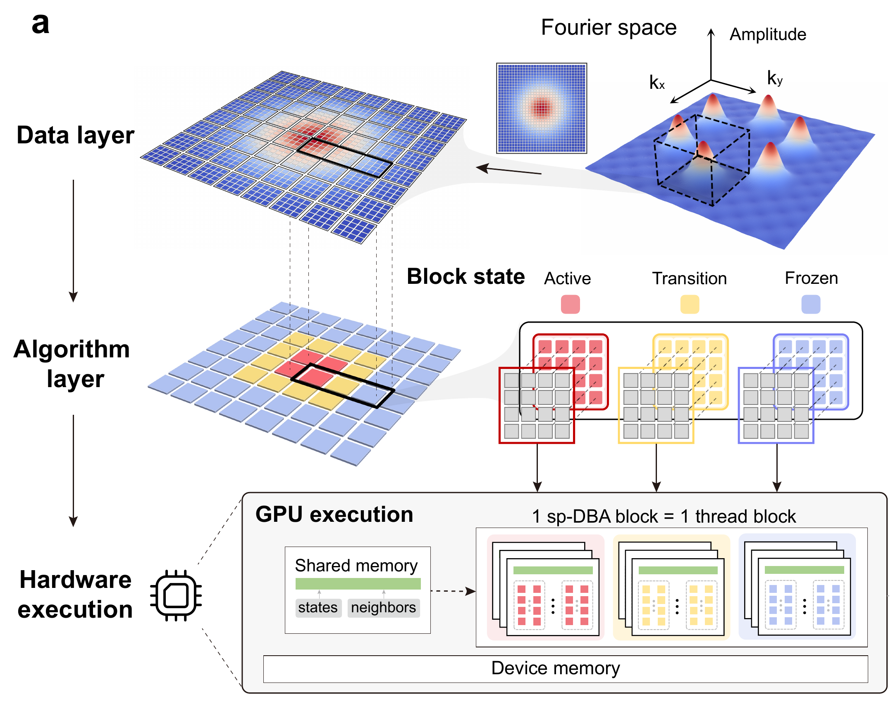

Research
My research focuses on adaptive scientific computing, parallel solvers, and materials simulation.
DBA
Ruoyao Zhang and Yang Xia introduced DBA to select full or reduced computation in real-space blocks. Their work connects local decisions with GPU execution and provides the starting point for sp-DBA.

sp-DBA
I led the design and implementation of sp-DBA with my advisor, Prof. Yang Xia, to reduce redundant Fourier-domain computation. Its shared core maps spectral blocks to CUDA thread blocks for full, smoothed, or skipped updates. Boundary smoothing and periodic refresh manage activation transitions, while the equations, numerical scheme, and FFT/IFFT workflow remain unchanged.
Applications span phase-field crystal (PFC) coarsening in materials science, reaction–cross-diffusion (RCD) pattern formation in biology, and digital backpropagation (DBP) in optical communications. With eigendecomposition, sp-DBA achieved up to 28.1× speedup in RCD updates over direct-matrix Regular. Controlled Gaussian-wave-packet DBP tests achieved 8.4× overall speedup over full-update Regular.
Phase-field crystal (PFC)
Materials science · Polycrystalline coarsening



Blocks switch between active, transition, and frozen states. Frozen blocks retain their values; the numerical representation and full FFT/IFFT workflow stay in place.
Reaction–cross-diffusion (RCD)
Biological pattern formation

Eight coupled fields form evolving patterns. Blue sp-DBA surfaces are compared with full-update Regular wireframes at the latter two times.
Digital backpropagation (DBP)
Optical communications

Adaptive frequency-domain linear updates recover controlled Gaussian wave packets. Time-domain nonlinear steps and FFT/IFFT operations remain.
Jingkun Jiang, Pingchuan Deng, and Yang Xia. sp-DBA: a general framework for adaptive transform-domain computation. Preprint (2026).
Distributed FFTs
I implemented distributed two-dimensional FFTs for PFC using slab decomposition, local cuFFT transforms, MPI redistribution, and CUDA-aware communication. Neighboring ranks exchange block states to coordinate adaptive updates at slab boundaries.


Computational Materials
Phase-field crystal models
I developed PFC, structural PFC (XPFC), and amplitude PFC (APFC) solvers for crystalline microstructure evolution. PFC/XPFC use Fourier pseudo-spectral discretization with fourth-order exponential time differencing (ETD4), implemented on CPUs and GPUs.

- Density peaksLocal maxima
- Local orientationSixfold bond order
- Grain segmentationPeriodic region growing
- Grain statisticsAreas and distributions

I extract density peaks, calculate local orientations from sixfold bond order, and export particle data with in-plane quaternions for inspection in OVITO. My segmentation code uses periodic neighbors and region growing to measure grain areas, equivalent diameters, and size distributions.
Amplitude phase-field crystal (APFC)
I implemented two-dimensional APFC solvers with three complex amplitudes and reconstructed density fields, including CPU/FFTW and CUDA/cuFFT versions.
Phase-field (PF) modeling
Three-dimensional dendritic growth

I implemented a three-dimensional phase-field solver coupling crystal phase and temperature, with finite differences and CPU/OpenMP, MPI, and CUDA versions. The image comes from early solver development.
Archived submission history
Dates refer to archived submission events and preparation packages.
Nature
· Submission package
· Editorial decision: declined
Nature Computational Science
· Submission package
· Appeal package
Editorial decision: declined · Appeal ongoing
npj Computational Materials
· Submission package
· Decision: declined
Communications AI & Computing
· Submission received
· Editor assigned